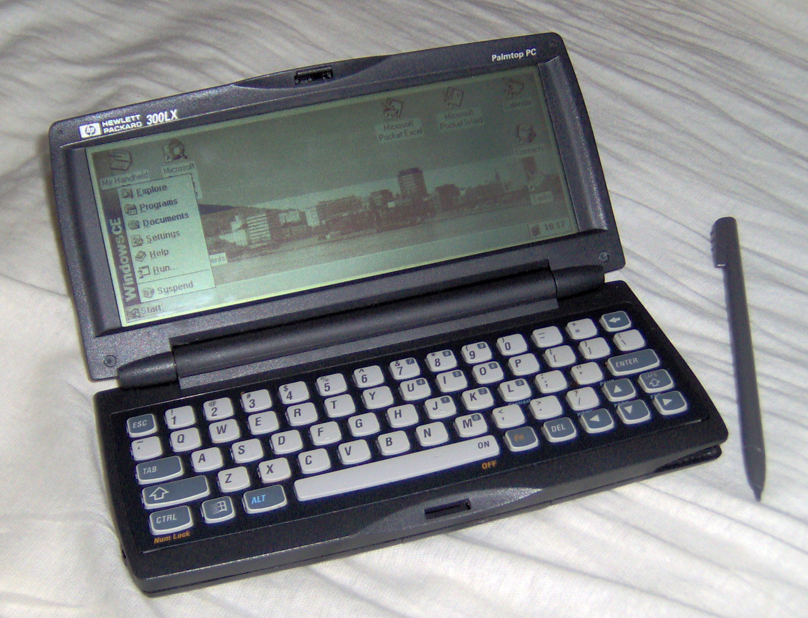

Introdução a mobile
Historia
1993
Primeiros aparelhos
Newton Message PAD

- tela sensível ao toque
- 1MB de memória
1996
Palms
Pilot 1000 e 5000

- Lançado pela U.S. Robotics
- dominaram a maior parte do mercado e existem até hoje
Windows CE 1.0
2000
Pocket PC 2000


- HP Jornada
- Compaq Ipaq

- Fez grande contribuição
- Comprado pela Nokia e usado por eles em seus aparelhos até 2012
iOS

- Apresentado em 2007 na Macworld Conference & Expo como iPhone OS
- Uma adaptação do sistema para Desktop
- Não tinha suporte para 3G
- Apos duas atulizações deu a posibilidade de comprar musicas pelo iTunes
Android

- Surgiu em 2003 na california
- Desenvolvido por Andy Rubin, Rich Miner, Nick Sears e Chris White, que fundaram a Android Inc.
- Open Source, baseado no kernel do linux
- Em 2005 a Android Inc. é comprada pelo Google, formando a Google Mobile Division
- Em 2007 grandes empresas como, Samsumg, Sony, HTC, entre outras se associam em um consórcio para criar o Open Handset Alliance
- E em 22 de Outubro de 2008 é lançado oficialmente o primeiro Android, rodando em HTC Dream
Primeiro Android no HTC Dream